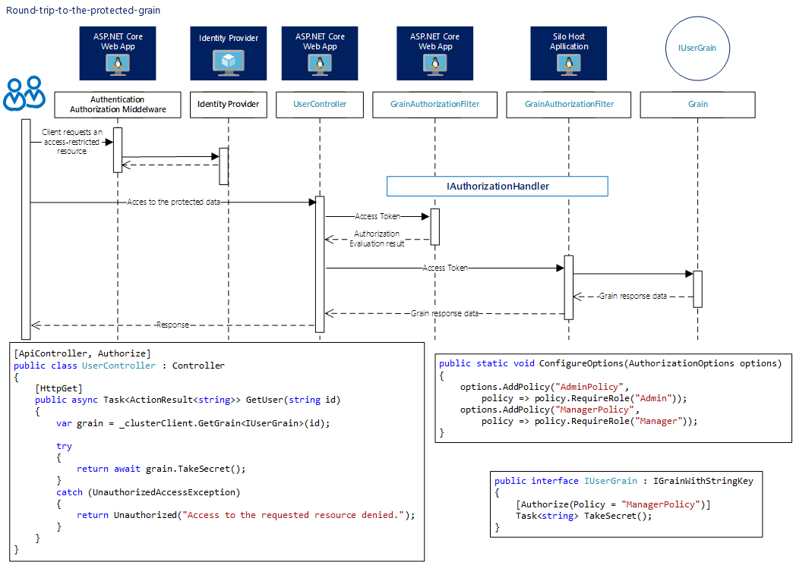

Authorization functionality for Microsoft Orleans
Get started now View it on GitHub
The security packages for Microsoft Orleans 8.*/9.* enable the use of authorization functionality similar to what is available in ASP.NET Core. These packages allow seamless integration with Microsoft Entra and Duende IdentityServer for securing Microsoft Orleans grains and any ASP.NET Core 8.*/9.* application.
Note
Authorization in Microsoft Orleans is mainly the same ASP.NET Core authorization. You can read more about ASP.NET Core authorization here.

The image below shows a round trip to the protected grain.

Getting started
Below is a simple example of using Duende IdentityServer with Microsoft Orleans 9. For more details, please visit the repository link.
IdentityServer
using AuthZI.MicrosoftOrleans.IdentityServer.SampleIdentityServer;
Console.Title = "IdentityServer";
var builder = WebApplication.CreateBuilder(args);
builder.Services.AddAuthorization();
builder.Services.AddIdentityServer()
.AddDeveloperSigningCredential()
.AddInMemoryApiScopes(IdentityServerConfig.GetApiScopes())
.AddInMemoryApiResources(IdentityServerConfig.GetApiResources())
.AddInMemoryIdentityResources(IdentityServerConfig.GetIdentityResources())
.AddInMemoryClients(IdentityServerConfig.GetClients())
.AddTestUsers(IdentityServerConfig.GetUsers());
var app = builder.Build();
app.UseRouting();
app.UseIdentityServer();
app.UseAuthorization();
app.MapGet("/", () => "IdentityServer is running...");
await app.RunAsync();
Microsoft Orleans 9.*
using AuthZI.MicrosoftOrleans.Authorization;
using AuthZI.Security.Authorization;
namespace AuthZI.MicrosoftOrleans.IdentityServer.SampleApiAndSiloHost;
public interface IProtectedGrain : IGrainWithStringKey
{
[Authorize(Roles = "Admin")]
Task<string> TakeSecret();
}
public class ProtectedGrain(SecureGrainContext secureGrainContext) :
SecureGrain(secureGrainContext), IProtectedGrain
{
public Task<string> TakeSecret()
{
return Task.FromResult("Success! You see the data which is available only for Admin role.");
}
}
using AuthZI.Identity.Duende.IdentityServer;
using AuthZI.MicrosoftOrleans.Authorization;
using AuthZI.MicrosoftOrleans.Duende.IdentityServer;
using AuthZI.MicrosoftOrleans.IdentityServer.SampleApiAndSiloHost;
using AuthZI.Security;
Console.Title = @"Api and SiloHost";
var builder = WebApplication.CreateBuilder(args);
var identityServerConfig = new IdentityServerConfig("https://localhost:7171",
"Cluster", @"@3x3g*RLez$TNU!_7!QW", "Cluster");
builder.Services.AddHttpContextAccessor();
builder.Services.AddTransient<IAccessTokenProvider, AccessTokenProvider>();
builder.Host.UseOrleans((context, siloBuilder) =>
{
siloBuilder.UseLocalhostClustering()
.ConfigureServices(services =>
{
services.AddOrleansAuthorization(identityServerConfig, config => { },
new AuthorizationConfiguration(true));
});
})
.UseConsoleLifetime()
.ConfigureLogging(loggingBuilder =>
{
loggingBuilder.AddConsole();
});
var app = builder.Build();
app.MapGet("/", () => "Running...");
app.MapGet("/protected-grain",
static async (IGrainFactory grains, HttpRequest request) =>
{
var protectedGrain =
grains.GetGrain<IProtectedGrain>(nameof(IProtectedGrain));
try
{
var secret = await protectedGrain.TakeSecret();
return Results.Ok(secret);
}
catch (AuthorizationException ex)
{
Console.WriteLine(ex.Message);
return Results.Unauthorized();
}
});
await app.RunAsync();
Sample Client
using AuthZI.MicrosoftOrleans.IdentityServer.SampleWebClient;
using IdentityModel.Client;
Console.Title = "WebClient";
var builder = WebApplication.CreateBuilder(args);
var app = builder.Build();
Console.WriteLine("Please press 's' to start.");
Console.ReadLine();
var identityServerUrl = "https://localhost:7171";
var accessToken = await AccessTokenRetriever.RetrieveToken(identityServerUrl);
Console.WriteLine($"AccessToken: {accessToken}");
var apiUrl = "https://localhost:7116";
var httpClient = new HttpClient() { BaseAddress = new Uri(apiUrl) };
httpClient.SetBearerToken(accessToken);
var response = await httpClient.GetAsync($"/protected-grain");
if (!response.IsSuccessStatusCode)
{
Console.WriteLine(response.StatusCode);
Console.WriteLine(response.Content.ToString());
}
else
{
var content = await response.Content.ReadAsStringAsync();
Console.WriteLine(content);
}
app.MapGet("/", () => "WebClient is running...");
await app.RunAsync();
Quick start
Please see sample solutions for more details.